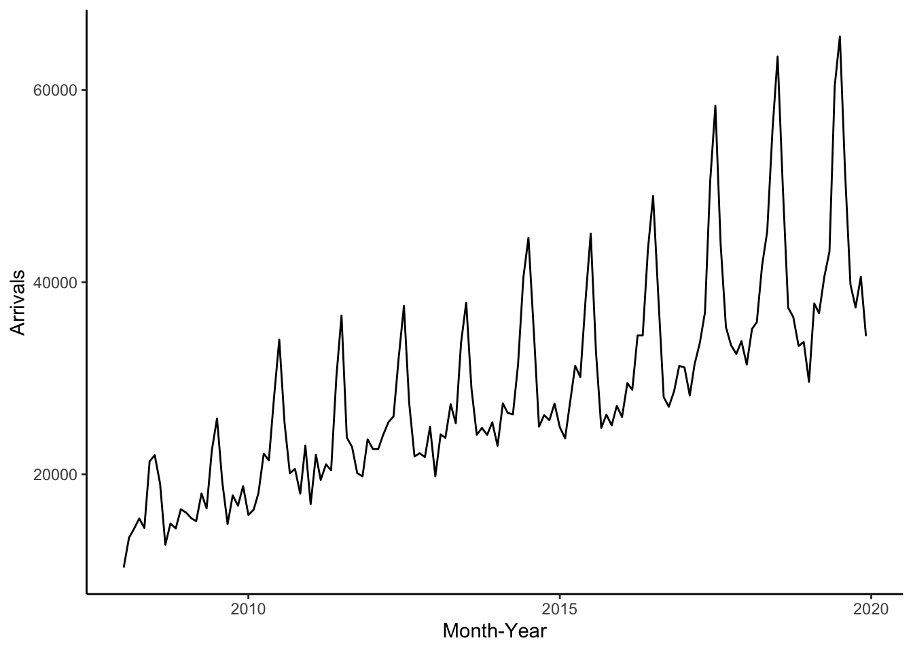
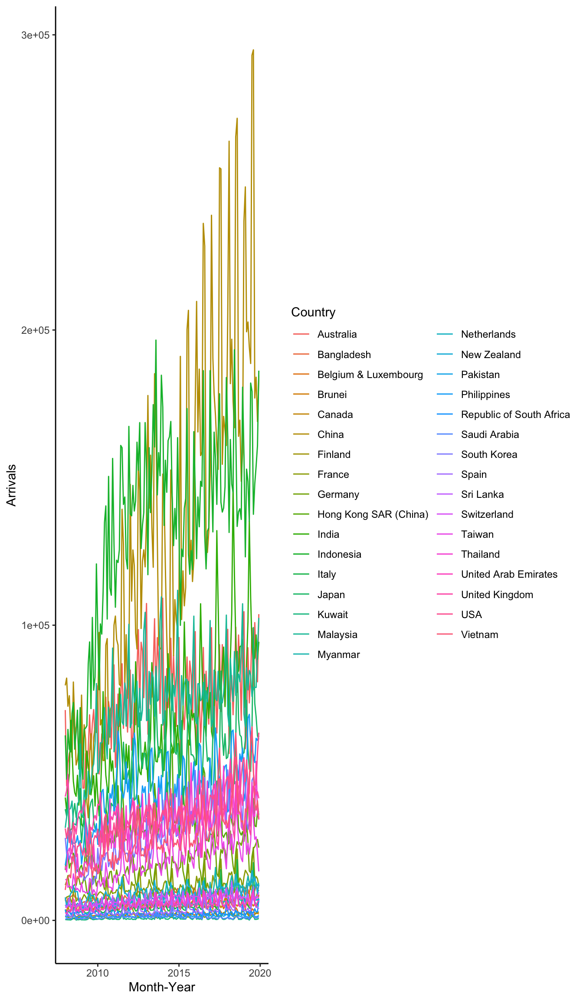
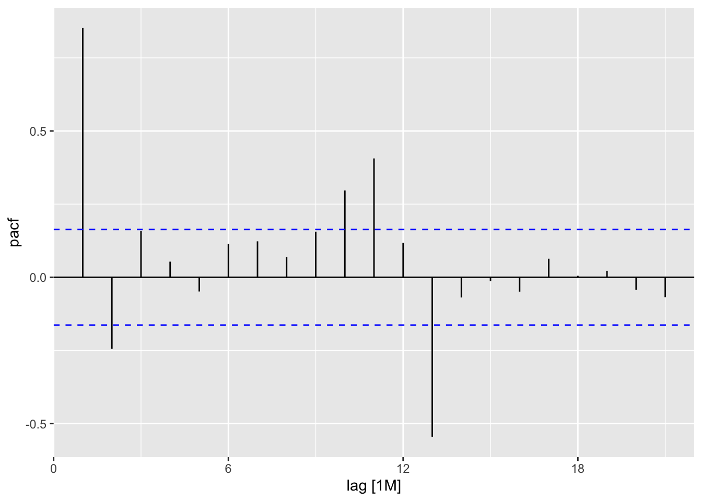
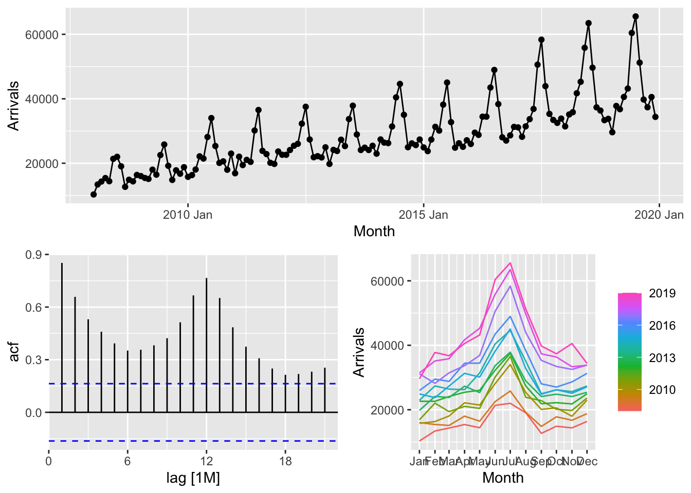
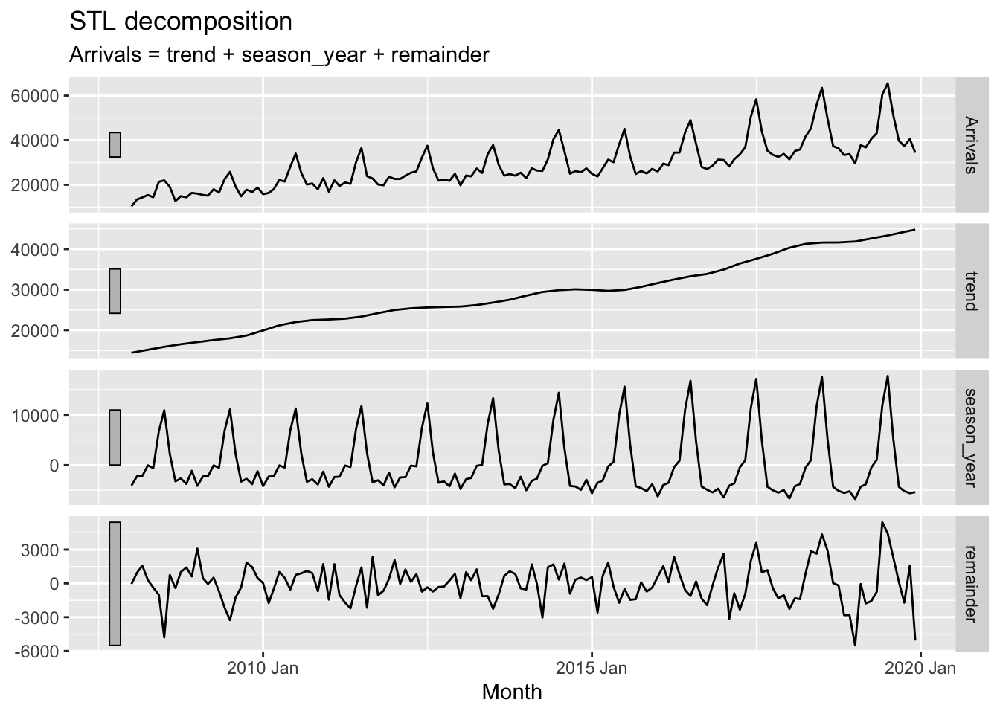

pacman::p_load(tidyverse, tsibble, feasts, fable, seasonal,knitr)In-class_Ex07
1 Installing packages and Importing data
ts_data <- read_csv("data/visitor_arrivals_by_air.csv")
# coverting data type from chr to date
ts_data$`Month-Year` <- dmy(ts_data$`Month-Year`)# date-month-year# check data structure
str(ts_data)spc_tbl_ [144 × 34] (S3: spec_tbl_df/tbl_df/tbl/data.frame)
$ Month-Year : Date[1:144], format: "2008-01-01" "2008-02-01" ...
$ Republic of South Africa: num [1:144] 3680 1662 3394 3337 2089 ...
$ Canada : num [1:144] 6972 6056 6220 4764 4460 ...
$ USA : num [1:144] 31155 27738 31349 26376 26788 ...
$ Bangladesh : num [1:144] 6786 6314 7502 7333 7988 ...
$ Brunei : num [1:144] 3729 3070 4805 3096 3586 ...
$ China : num [1:144] 79599 82074 72546 76112 64808 ...
$ Hong Kong SAR (China) : num [1:144] 17103 21089 23230 17688 19340 ...
$ India : num [1:144] 41639 37170 44815 49527 67754 ...
$ Indonesia : num [1:144] 62683 47834 64688 58074 57089 ...
$ Japan : num [1:144] 37673 35297 42575 26839 30814 ...
$ South Korea : num [1:144] 27937 22633 22876 20634 22785 ...
$ Kuwait : num [1:144] 284 241 206 193 140 354 749 864 118 246 ...
$ Malaysia : num [1:144] 31352 35030 37629 37521 38044 ...
$ Myanmar : num [1:144] 5269 4643 6218 7324 5395 ...
$ Pakistan : num [1:144] 1395 1027 1635 1232 1306 ...
$ Philippines : num [1:144] 18622 21609 28464 30131 30193 ...
$ Saudi Arabia : num [1:144] 406 591 626 644 470 ...
$ Sri Lanka : num [1:144] 5289 4767 4988 7639 5125 ...
$ Taiwan : num [1:144] 13757 13921 11181 11665 11436 ...
$ Thailand : num [1:144] 18370 16400 23387 24469 21935 ...
$ United Arab Emirates : num [1:144] 2652 2230 3353 3245 2856 ...
$ Vietnam : num [1:144] 10315 13415 14320 15413 14424 ...
$ Belgium & Luxembourg : num [1:144] 1341 1449 1674 1426 1243 ...
$ Finland : num [1:144] 1179 1207 1071 768 690 ...
$ France : num [1:144] 6918 7876 8066 8312 7066 ...
$ Germany : num [1:144] 11982 13256 15185 11604 9853 ...
$ Italy : num [1:144] 2953 2704 2822 3018 2165 ...
$ Netherlands : num [1:144] 4938 4885 5015 4902 4397 ...
$ Spain : num [1:144] 1668 1568 2254 1503 1365 ...
$ Switzerland : num [1:144] 4450 4381 5015 5434 4427 ...
$ United Kingdom : num [1:144] 41934 44029 49489 35771 24464 ...
$ Australia : num [1:144] 71260 45595 53191 56514 57808 ...
$ New Zealand : num [1:144] 7806 4729 6106 7560 9090 ...
- attr(*, "spec")=
.. cols(
.. `Month-Year` = col_character(),
.. `Republic of South Africa` = col_double(),
.. Canada = col_double(),
.. USA = col_double(),
.. Bangladesh = col_double(),
.. Brunei = col_double(),
.. China = col_double(),
.. `Hong Kong SAR (China)` = col_double(),
.. India = col_double(),
.. Indonesia = col_double(),
.. Japan = col_double(),
.. `South Korea` = col_double(),
.. Kuwait = col_double(),
.. Malaysia = col_double(),
.. Myanmar = col_double(),
.. Pakistan = col_double(),
.. Philippines = col_double(),
.. `Saudi Arabia` = col_double(),
.. `Sri Lanka` = col_double(),
.. Taiwan = col_double(),
.. Thailand = col_double(),
.. `United Arab Emirates` = col_double(),
.. Vietnam = col_double(),
.. `Belgium & Luxembourg` = col_double(),
.. Finland = col_double(),
.. France = col_double(),
.. Germany = col_double(),
.. Italy = col_double(),
.. Netherlands = col_double(),
.. Spain = col_double(),
.. Switzerland = col_double(),
.. `United Kingdom` = col_double(),
.. Australia = col_double(),
.. `New Zealand` = col_double()
.. )
- attr(*, "problems")=<externalptr> summary(ts_data) Month-Year Republic of South Africa Canada USA
Min. :2008-01-01 Min. :1316 Min. : 3103 Min. :21519
1st Qu.:2010-12-24 1st Qu.:1958 1st Qu.: 5020 1st Qu.:30238
Median :2013-12-16 Median :2378 Median : 5958 Median :34343
Mean :2013-12-15 Mean :2524 Mean : 6279 Mean :36007
3rd Qu.:2016-12-08 3rd Qu.:2802 3rd Qu.: 7352 3rd Qu.:39825
Max. :2019-12-01 Max. :7370 Max. :11927 Max. :65221
Bangladesh Brunei China Hong Kong SAR (China)
Min. : 5275 Min. : 2983 Min. : 34768 Min. :16278
1st Qu.: 7541 1st Qu.: 4262 1st Qu.: 80025 1st Qu.:27250
Median : 9065 Median : 4893 Median :121784 Median :31084
Mean : 8855 Mean : 5126 Mean :130798 Mean :31891
3rd Qu.: 9954 3rd Qu.: 5496 3rd Qu.:169530 3rd Qu.:35916
Max. :12200 Max. :10036 Max. :294905 Max. :61067
India Indonesia Japan South Korea
Min. : 31674 Min. : 47807 Min. :21733 Min. :12070
1st Qu.: 50131 1st Qu.:119010 1st Qu.:39981 1st Qu.:22688
Median : 60393 Median :138380 Median :51012 Median :29174
Mean : 66350 Mean :131947 Mean :50728 Mean :29861
3rd Qu.: 79082 3rd Qu.:156481 3rd Qu.:59694 3rd Qu.:35932
Max. :146781 Max. :196581 Max. :99197 Max. :51164
Kuwait Malaysia Myanmar Pakistan
Min. : 118.0 Min. : 31352 Min. : 3794 Min. : 770
1st Qu.: 357.5 1st Qu.: 65636 1st Qu.: 6028 1st Qu.:1192
Median : 494.0 Median : 74090 Median : 7492 Median :1326
Mean : 661.5 Mean : 71442 Mean : 8169 Mean :1513
3rd Qu.: 758.8 3rd Qu.: 81403 3rd Qu.: 9626 3rd Qu.:1696
Max. :2555.0 Max. :111825 Max. :17940 Max. :3627
Philippines Saudi Arabia Sri Lanka Taiwan
Min. :18622 Min. : 351.0 Min. : 3654 Min. : 8047
1st Qu.:35863 1st Qu.: 718.2 1st Qu.: 5249 1st Qu.:14667
Median :43286 Median : 924.0 Median : 6274 Median :19808
Mean :43537 Mean :1119.1 Mean : 6620 Mean :20373
3rd Qu.:51870 3rd Qu.:1406.0 3rd Qu.: 7630 3rd Qu.:26003
Max. :69810 Max. :4323.0 Max. :13239 Max. :41208
Thailand United Arab Emirates Vietnam Belgium & Luxembourg
Min. :14700 Min. : 2230 Min. :10315 Min. :1140
1st Qu.:26092 1st Qu.: 4077 1st Qu.:21849 1st Qu.:1650
Median :32079 Median : 4892 Median :26324 Median :1933
Mean :31905 Mean : 5359 Mean :28843 Mean :1992
3rd Qu.:37199 3rd Qu.: 6331 3rd Qu.:34450 3rd Qu.:2262
Max. :54359 Max. :10584 Max. :65556 Max. :4398
Finland France Germany Italy Netherlands
Min. : 511 Min. : 5926 Min. : 8760 Min. : 2022 Min. : 3645
1st Qu.:1141 1st Qu.: 9290 1st Qu.:14112 1st Qu.: 3267 1st Qu.: 5013
Median :1576 Median :10618 Median :17152 Median : 4274 Median : 5650
Mean :1907 Mean :11481 Mean :18159 Mean : 4841 Mean : 5886
3rd Qu.:2661 3rd Qu.:13369 3rd Qu.:22267 3rd Qu.: 5057 3rd Qu.: 6375
Max. :4855 Max. :24741 Max. :33439 Max. :20617 Max. :10701
Spain Switzerland United Kingdom Australia
Min. : 1365 Min. : 3310 Min. :21058 Min. : 44777
1st Qu.: 2227 1st Qu.: 5472 1st Qu.:30647 1st Qu.: 64232
Median : 2838 Median : 6684 Median :34286 Median : 74875
Mean : 3274 Mean : 6719 Mean :34982 Mean : 75175
3rd Qu.: 3738 3rd Qu.: 7948 3rd Qu.:39108 3rd Qu.: 85969
Max. :11535 Max. :10512 Max. :54669 Max. :109142
New Zealand
Min. : 3825
1st Qu.: 7452
Median : 9418
Mean : 9197
3rd Qu.:10719
Max. :16844 2 Visualising Time-series Data
2.1 Conventional base ts object versus tibbleobject
ts_data_ts <- ts(ts_data)
class(ts_data_ts)[1] "mts" "ts" "matrix" "array" kable(head(ts_data_ts))| Month-Year | Republic of South Africa | Canada | USA | Bangladesh | Brunei | China | Hong Kong SAR (China) | India | Indonesia | Japan | South Korea | Kuwait | Malaysia | Myanmar | Pakistan | Philippines | Saudi Arabia | Sri Lanka | Taiwan | Thailand | United Arab Emirates | Vietnam | Belgium & Luxembourg | Finland | France | Germany | Italy | Netherlands | Spain | Switzerland | United Kingdom | Australia | New Zealand |
|---|---|---|---|---|---|---|---|---|---|---|---|---|---|---|---|---|---|---|---|---|---|---|---|---|---|---|---|---|---|---|---|---|---|
| 13879 | 3680 | 6972 | 31155 | 6786 | 3729 | 79599 | 17103 | 41639 | 62683 | 37673 | 27937 | 284 | 31352 | 5269 | 1395 | 18622 | 406 | 5289 | 13757 | 18370 | 2652 | 10315 | 1341 | 1179 | 6918 | 11982 | 2953 | 4938 | 1668 | 4450 | 41934 | 71260 | 7806 |
| 13910 | 1662 | 6056 | 27738 | 6314 | 3070 | 82074 | 21089 | 37170 | 47834 | 35297 | 22633 | 241 | 35030 | 4643 | 1027 | 21609 | 591 | 4767 | 13921 | 16400 | 2230 | 13415 | 1449 | 1207 | 7876 | 13256 | 2704 | 4885 | 1568 | 4381 | 44029 | 45595 | 4729 |
| 13939 | 3394 | 6220 | 31349 | 7502 | 4805 | 72546 | 23230 | 44815 | 64688 | 42575 | 22876 | 206 | 37629 | 6218 | 1635 | 28464 | 626 | 4988 | 11181 | 23387 | 3353 | 14320 | 1674 | 1071 | 8066 | 15185 | 2822 | 5015 | 2254 | 5015 | 49489 | 53191 | 6106 |
| 13970 | 3337 | 4764 | 26376 | 7333 | 3096 | 76112 | 17688 | 49527 | 58074 | 26839 | 20634 | 193 | 37521 | 7324 | 1232 | 30131 | 644 | 7639 | 11665 | 24469 | 3245 | 15413 | 1426 | 768 | 8312 | 11604 | 3018 | 4902 | 1503 | 5434 | 35771 | 56514 | 7560 |
| 14000 | 2089 | 4460 | 26788 | 7988 | 3586 | 64808 | 19340 | 67754 | 57089 | 30814 | 22785 | 140 | 38044 | 5395 | 1306 | 30193 | 470 | 5125 | 11436 | 21935 | 2856 | 14424 | 1243 | 690 | 7066 | 9853 | 2165 | 4397 | 1365 | 4427 | 24464 | 57808 | 9090 |
| 14031 | 2515 | 3888 | 29725 | 8301 | 5284 | 55238 | 19152 | 57380 | 70118 | 31001 | 22575 | 354 | 40419 | 5542 | 1996 | 25800 | 772 | 4791 | 10689 | 19900 | 4292 | 21368 | 1255 | 624 | 5926 | 9347 | 2022 | 4166 | 1446 | 3359 | 22473 | 63350 | 9681 |
2.2 Converting tibble object to tsibbleobject
Built on top of the tibble, a tsibble (or tbl_ts) is a data- and model-oriented object. Compared to the conventional time series objects in R, for example ts, zoo, and xts, the tsibble preserves time indices as the essential data column and makes heterogeneous data structures possible. Beyond the tibble-like representation, key comprised of single or multiple variables is introduced to uniquely identify observational units over time (index).
ts_tsibble <- ts_data %>%
mutate(Month = yearmonth(`Month-Year`)) %>%
as_tsibble(index = `Month`)2.3 Visualising Time-series Data
In order to visualise the time-series data effectively, we need to organise the data frame from wide to long format by using pivot_longer() of tidyr package as shown below.
ts_longer <- ts_data %>%
#organize country data in a column "Country"
pivot_longer(cols = c(2:34),
names_to = "Country",
values_to = "Arrivals")2.3.1 Visualising single time-series: ggplot2 methods
filter()of dplyr package is used to select records belong to Vietnam.geom_line()of ggplot2 package is used to plot the time-series line graph.
ts_longer %>%
filter(Country == "Vietnam") %>% #plot vietnam
ggplot(aes(x = `Month-Year`,
y = Arrivals))+
geom_line(size = 0.5)+
theme_classic()
2.3.2 Plotting multiple time-series data with ggplot2 methods
ggplot(data = ts_longer,
aes(x = `Month-Year`,
y = Arrivals,
color = Country,
))+
geom_line(size = 0.5) +
theme_classic()+
theme(legend.position = "right",
legend.box.spacing = unit(0.5, "cm"))
ggplot(data = ts_longer,
aes(x = `Month-Year`,
y = Arrivals))+
geom_line(size = 0.5) +
facet_wrap(~ Country,
ncol = 3,
scales = "free_y") +
theme_bw()
2.4 Visual Analysis of Seasonality with Cycle Plot
tsibble_longer <- ts_tsibble %>%
pivot_longer(cols = c(2:34),
names_to = "Country",
values_to = "Arrivals")tsibble_longer %>%
filter(Country == "Vietnam" |
Country == "Italy") %>%
gg_subseries(Arrivals)
3 Time series decomposition
Time series decomposition allows us to isolate structural components: trend + seasonality cycle + error (irregularity)
3.1 Single time series decomposition
In feasts package, time series decomposition is supported by ACF(), PACF(), CCF(), feat_acf(), and feat_pacf(). The output can then be plotted by using autoplot() of feasts package.
ACF: Autocorrelation and Cross-Correlation Function
PACF:
In the code chunk below, ACF() of feasts package is used to plot the ACF curve of visitor arrival from Vietnam.
The y-axis show the correlation between current time:t(0) and time lag:t(n)
Blue lines suggest whether the acf or pacf is statistically significant
tsibble_longer %>%
filter(`Country` == "Vietnam") %>%
ACF(Arrivals)# A tsibble: 21 x 3 [1M]
# Key: Country [1]
Country lag acf
<chr> <cf_lag> <dbl>
1 Vietnam 1M 0.852
2 Vietnam 2M 0.658
3 Vietnam 3M 0.530
4 Vietnam 4M 0.460
5 Vietnam 5M 0.393
6 Vietnam 6M 0.352
7 Vietnam 7M 0.357
8 Vietnam 8M 0.382
9 Vietnam 9M 0.423
10 Vietnam 10M 0.513
# ℹ 11 more rowstsibble_longer %>%
filter(`Country`== "Vietnam") %>%
ACF(Arrivals) %>%
autoplot()
tsibble_longer %>%
filter(`Country` == "Vietnam") %>%
PACF(Arrivals)# A tsibble: 21 x 3 [1M]
# Key: Country [1]
Country lag pacf
<chr> <cf_lag> <dbl>
1 Vietnam 1M 0.852
2 Vietnam 2M -0.245
3 Vietnam 3M 0.158
4 Vietnam 4M 0.0534
5 Vietnam 5M -0.0486
6 Vietnam 6M 0.114
7 Vietnam 7M 0.123
8 Vietnam 8M 0.0692
9 Vietnam 9M 0.156
10 Vietnam 10M 0.297
# ℹ 11 more rowslag2 significantly decreased:
tsibble_longer %>%
filter(`Country` == "Vietnam") %>%
PACF(Arrivals) %>%
autoplot()
3.2 Multiple time-series decomposition
China (6-month), UK(12-month) and Vietnam(12-month) show both strong seasonal pattern.
tsibble_longer %>%
filter(`Country` == "Vietnam" |
`Country` == "Italy" |
`Country` == "United Kingdom" |
`Country` == "China") %>%
ACF(Arrivals) %>%
autoplot()
tsibble_longer %>%
filter(`Country` == "Vietnam" |
`Country` == "Italy" |
`Country` == "United Kingdom" |
`Country` == "China") %>%
PACF(Arrivals) %>%
autoplot()
3.3 Composite plot of time series decomposition
One of the interesting function of feasts package time series decomposition is gg_tsdisplay(). It provides a composite plot by showing the original line graph on the top pane follow by the ACF on the left and seasonal plot on the right.
tsibble_longer %>%
filter(`Country` == "Vietnam") %>%
gg_tsdisplay(Arrivals)
3.4 Visual STL Diagnostics
STL is an acronym for “Seasonal and Trend decomposition using Loess”. STL is a robust method of time series decomposition often used in economic and environmental analyses. The STL method uses locally fitted regression models to decompose a time series into trend, seasonal, and remainder components.
- remainder: white noise and errors
tsibble_longer %>%
filter(`Country` == "Vietnam") %>%
model(stl = STL(Arrivals)) %>%
components() %>%
autoplot()
The grey bars to the left of each panel show the relative scales of the components. Each grey bar represents the same length but because the plots are on different scales, the bars vary in size. The large grey bar in the bottom panel shows that the variation in the remainder component is smallest compared to the variation in the data. If we shrank the bottom three panels until their bars became the same size as that in the data panel, then all the panels would be on the same scale.
3.5 Visual Forecasting
In this section, two R packages belong to tidyverts family will be used they are:
fable provides a collection of commonly used univariate and multivariate time series forecasting models including exponential smoothing via state space models and automatic ARIMA modelling. It is a tidy version of the popular forecast package and a member of tidyverts.
fabletools provides tools for building modelling packages, with a focus on time series forecasting. This package allows package developers to extend fable with additional models, without needing to depend on the models supported by fable.
3.5.1 Time Series Data Sampling
A good practice in forecasting is to split the original data set into a training and a hold-out data sets. The first part is called estimate sample (also known as training data). It will be used to estimate the starting values and the smoothing parameters. This sample typically contains 75-80 percent of the observation, although the forecaster may choose to use a smaller percentage for longer series.
The second part of the time series is called hold-out sample. It is used to check the forecasting performance. No matter how many parameters are estimated with the estimation sample, each method under consideration can be evaluated with the use of the “new” observation contained in the hold-out sample.
** time-series data sample shouldn’t be shuffled for its continous attribute
In this example we will use the last 12 months for hold-out and the rest for training. (2019/1~2019/12)
# hold-out sample
vietnam_ts <- tsibble_longer %>%
filter(Country == "Vietnam") %>%
mutate(Type = if_else(
`Month-Year` >= "2019-01-01",
"Hold-out", "Training"))# training sample
vietnam_train <- vietnam_ts %>%
filter(`Month-Year` < "2019-01-01")3.5.2 fit the models